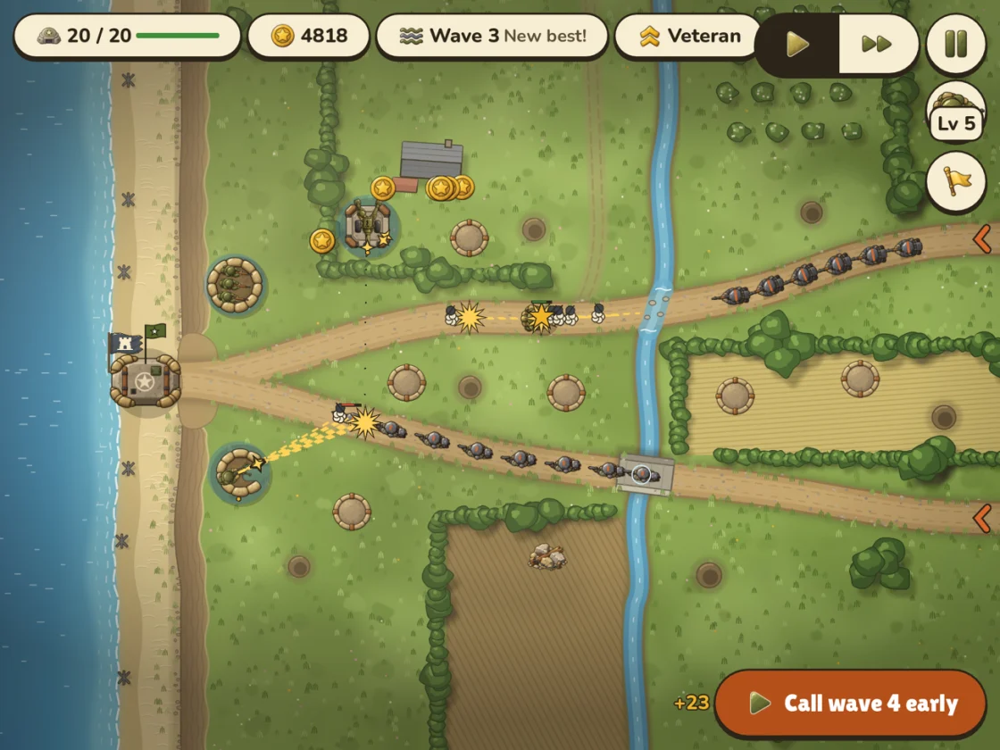
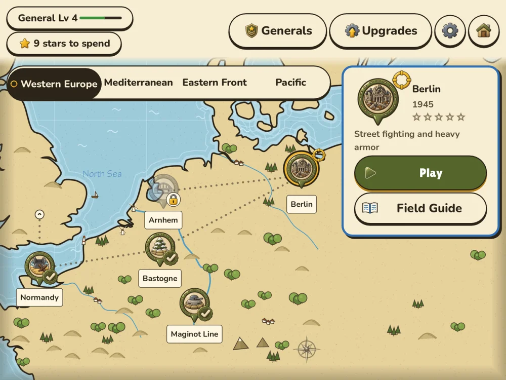

Battles of History
Via Belli
Build towers, command heroes and hold the line. Every level takes its terrain and tactics from a real battle.

About the game
Build towers along the enemy's road, lead your hero and your generals, and hold the line. Each level takes a real battle as its strategic template: the roads, the terrain and the pressure the defenders faced shape the puzzle.
Free to download on iPhone and iPad.
The campaign
Five free battles of the Second World War, each introducing a different challenge.
- Maginot Line · 1940. Fortress lines and armored pushes.
- Siege of Malta · 1942. Air raids and anti-air guns.
- Normandy · 1944. Two roads off the beach, and your first hero.
- Bastogne · 1944. Encirclement in the snow.
- Berlin · 1945. Street fighting and heavy armor.
The optional Additional WWII Battles pack adds Guadalcanal, Arnhem, Stalingrad, Tobruk and Kohima, plus two more generals. The launch battles, upgrades and the Field Guide stay free.

How it plays
Towers and upgrades
Eight kinds of tower, each with its own job, that you upgrade and specialize as the battle goes on.
Heroes and generals
Command your hero in the field, and earn stars to unlock a general's skills between battles.
Three difficulties
Recruit, Veteran and Elite, with extra stars for winning on the harder ones.
Private by design
No accounts, no ads and no tracking. Your progress is saved on your device, and achievements use Apple's Game Center.
Questions and support
Email joe@scoopsdevstudios.com.